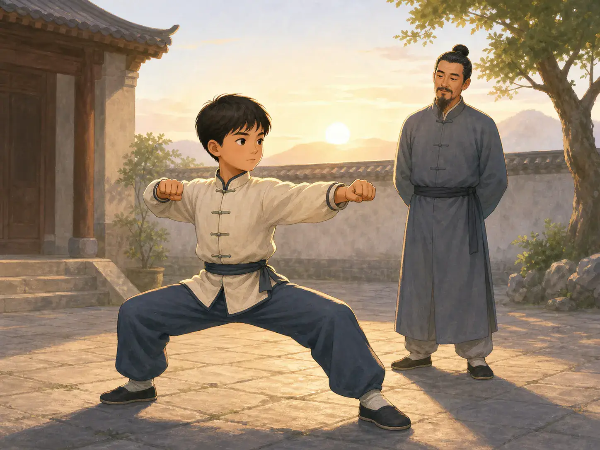
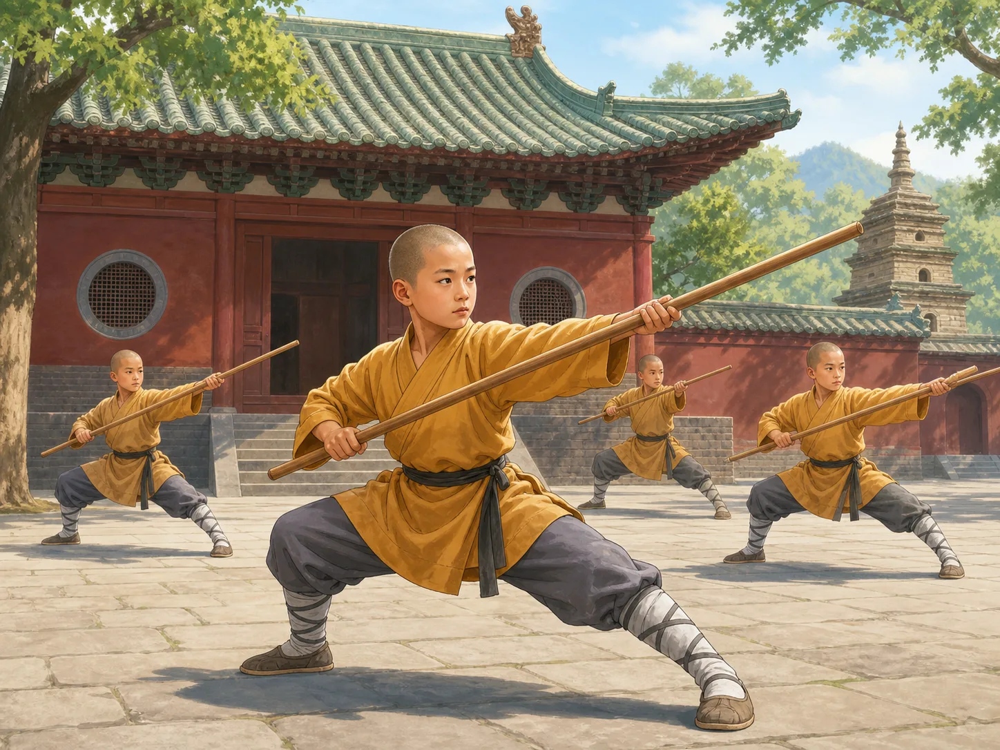
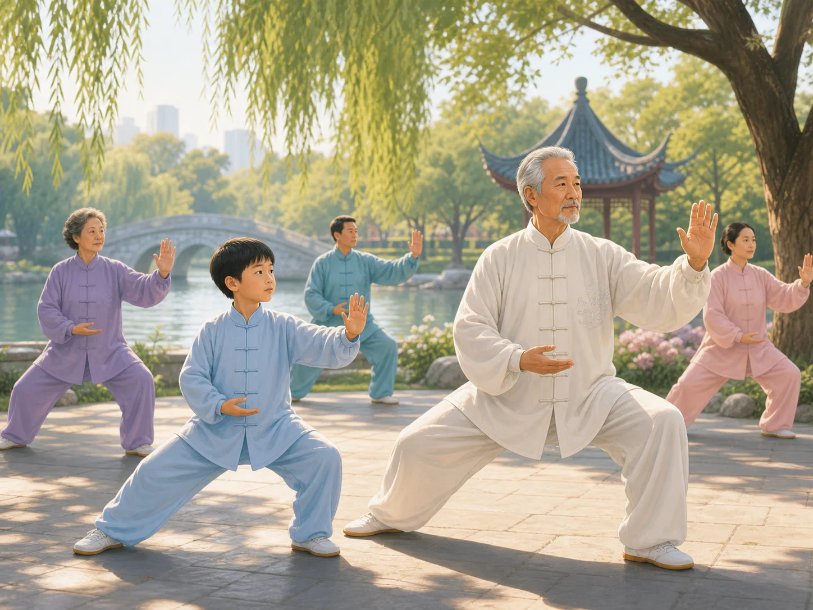

功夫：像风一样快，像山一样稳
Kung Fu: Fast Like Wind, Steady Like a Mountain
Page 1
“老师，能不能先教我最厉害的那一招？”
“Can I Learn the Coolest Move First?”

A child practices a horse stance in a courtyard while his teacher watches.
想象一下，你第一次去学gōngfu · 既可以指武术，也可以指长期练习形成的本领。，心里只惦记着一件事：“老师，能不能先教我最厉害的那一招？”你想的当然是飞踢。最好再转个圈。要是一脚出去，旁边的人都忍不住“哇”一声，那就更完美了。
结果老师指指地面：“先站好。”你把两只脚放稳，膝盖微微弯下，一动不动。三十秒以后，腿开始抖了。这好像和电影里演得不太一样。
可是，要明白什么是真正的“功夫”，这里反而是个很好的开始。英文里的 kung fu，通常就是指中国武术。可是中文里的“功夫”意思大得多。一个人花了很多时间，把一件事练得又熟又好，就可以说“有功夫”。厨师切菜又快又准，是功夫；shūfǎ · 用毛笔等工具书写汉字的艺术。家落笔稳稳当当，也是功夫；练武的人能控制自己的身体，当然也是功夫。
大家看见的，是最后那个漂亮的动作。真正的功夫，却藏在它前面。
Imagine walking into your first gōngfu · 功夫 · A word that can mean martial arts or any skill developed through long practice. class with one question: “Can I learn the coolest move first?” In your head, “coolest” means a flying kick. Maybe a spin. Possibly something that makes everyone nearby say, “Whoa.”
Instead, the teacher points to the floor. “Stand here.” You put your feet in place, bend your knees, and try not to move. Thirty seconds later, your legs begin to shake. This is not what the movies promised.
But it is a good place to discover what kung fu really means. In English, “kung fu” usually means Chinese martial arts. In Chinese, kung fu has a much bigger meaning. It can be the skill that grows when someone spends a long time working carefully at something. A cook can have kung fu with a knife. A calligrapher can have kung fu with a brush. A martial artist can have kung fu with the body.
The impressive move is only the part everyone sees. The kung fu is how it got there.
Page 2
一棵大树，有很多枝条
One Big Tree, Many Branches

Several young students practice staff movements in a temple courtyard.
中国武术从来不是一整套完全一样的动作。这么大的中国，不同地方、不同师傅，慢慢练出了许多不同的路子。少林是其中很有名的一支，却不是整棵大树。
有的拳法出手很快，有的腿法舒展开来；有人用棍、用剑，也有人空手练习。有的人突然向前冲出去，有的人先转身、绕开，再寻找机会。动作差得这么多，它们到底有什么共同的地方？其中一个答案，是“控制”。
Chinese martial arts did not grow into one single set of movements. Over centuries, different places, teachers, and traditions developed different ways of training. Shaolin is one famous branch of that enormous tree—but only one branch.
Elsewhere, you might see quick hand movements, wide kicks, low stances, staffs, swords, or empty hands. One person may move forward in a sudden burst. Another may turn away, circle, and wait. If all of that can be called Chinese martial arts, what do these very different movements have in common? One answer is control.
Page 3
快，不等于乱冲
Fast Does Not Mean Wild
快，不是拼命快就行。一脚踢出去，要停在自己想停的位置；身体转了一圈，脚下还得站得住。如果人冲出去了，平衡却不知道飞到哪里去了，那再快也没什么用。
所以很多基本练习，看起来一点也不“电影”：迈步，转身，把重心换到另一只脚，停住。然后再来一次，再来一次，又来一次。
精彩的一招也许只有一秒钟，可要把这一秒控制好，可能要练很多年。还有一种中国武术，第一次看时甚至会让人怀疑：这真的算功夫吗？因为它把一切都慢了下来。
Fast movement is not simply “move as fast as you can.” A kick has to land where you meant it to. A turn has to finish with your feet under you. If your whole body flies one way and your balance flies another, speed has not helped very much.
That is why beginners often practice things that do not look spectacular at all: step, turn, shift your weight, stop. Then do it again. And again. And again.
The exciting part may last one second. Learning to control that second can take years. And then there is a kind of Chinese martial art that seems to do the exact opposite. It slows everything down.
Page 4
这是不是把功夫按了“慢放”？
Is This Kung Fu in Slow Motion?

Several people follow an instructor practicing taijiquan in a park in the morning.
清晨的公园里，人们慢慢抬起手，轻轻迈出一步，身体缓缓转过去。他们练的是tàijíquán · 重视缓慢连贯动作、呼吸和身体控制的中国武术。。动作又圆又稳，好像连早晨都突然不着急了。
第一次看，你可能会想：这是不是把功夫按了“慢放”？可是，慢恰恰是难的地方。太极拳讲究放松、圆转，也讲究呼吸、平衡和身体的控制。动作一慢下来，哪里没站稳就藏不住了。身体的重量在哪只脚上？另一只脚抬起来时会不会晃？手动的时候，身体能不能跟着一起稳稳地转过去？一着急，动作反而容易散掉。
所以，快得像风的人和慢慢打太极的人，看起来好像完全相反，其实都在练同一件事：让身体准确地听自己的指挥。什么时候动，往哪里转，在哪里停。而“停得住”，有时候比“冲得快”还难。
Early in the morning, you may see people practicing tàijíquán · 太极拳 · A Chinese martial art known for slow connected movement, breathing, and control. in Chinese parks. An arm floats outward. A foot steps forward. The body turns slowly and smoothly, as if the morning itself has decided not to hurry.
The first time you watch, you might wonder: Is this martial arts in slow motion? In a way, the slowness is the challenge. taijiquan uses relaxed, circular movements together with breathing and careful control of the body. When you move slowly, you cannot hide a wobble inside speed. You notice exactly where your weight is. You feel when one foot becomes light and the other has to hold you up. Try rushing, and the smoothness disappears.
So the fast martial artist and the slow one are not opposites after all. Both are trying to make the body obey an exact decision: go now, turn here, stop there. And “stop” may be one of the hardest parts.
大家看不见的那一部分
The Part Nobody Sees
真正的本事，不只是有力气，而是能把力气控制住。
现在，再回到第一次上课的你。腿还在抖。老师又说：“再来一次。”于是你又站好。
很多很多次以后，原来别扭的动作变得自然了。再后来，有人看见你做出来，也许会说：“这个好像很简单嘛。”简单？你的腿可记得不是这么回事。
这就是“功夫”这个词最有意思的地方。最后那一招也许只有一秒钟，可以快得像风，也可以慢得像山一样稳。真正的功夫，却是藏在这一秒钟里面，那些别人没有看见的时间。
Real skill is not only being able to use strength. It is being able to control it.
So imagine that first class again. Your legs are still shaking. The teacher says, “Again.” You stand again.
Much later, perhaps after hundreds and hundreds of “agains,” the movement that once felt impossible becomes ordinary. Someone watching may even say, “That looks easy.” Easy? Your legs remember otherwise.
That is the funny secret inside kung fu. The final movement may last only a second. It may be fast like wind or slow and steady like a mountain. But the real kung fu is all the time hidden inside that second.